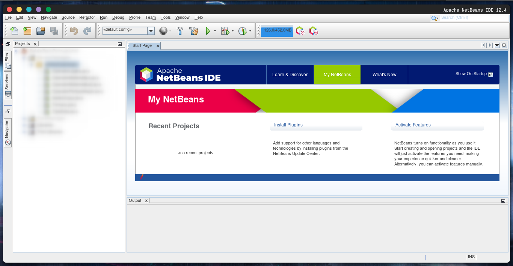

21 Agustus 2021
Bismillah,
Halo teman-teman!,
Kali ini masalah yang dihadapi yaitu font pada netbeans yang rusak, kata lainnya tidak smooth. hal tersebut karena netbeans dibuat dengan Java, sehingga font pada netbeans diatur oleh Java. [1]
Langkah yang perlu dilakukan adalah menambah config pada folder .netbeans,
~/.netbeans/version/etc/netbeans.conf
dengan isian config :
nb: jika file tsb tidak ada, teman-teman buat dulu filenya,
lalu teman-teman buka kembali aplikasi netbeansnya!
